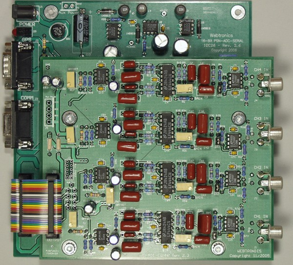
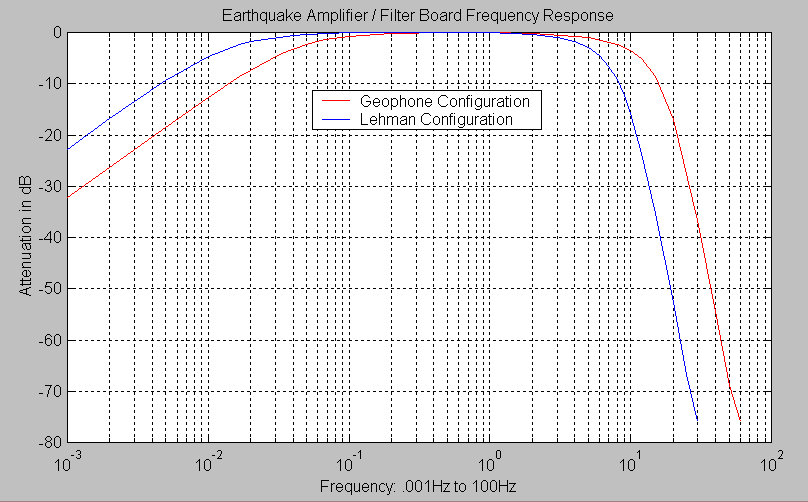

Number of channels: One to Four Independent Amplifier / Filter Channels
Gain: ~145 to ~6,000 - Set by Trim Pot and Jumper
Frequency Response: 0.016Hz (60 Sec.) to 10Hz for Lehman Type Sensors or
0.05Hz (20 Sec.) to 20Hz for Geophone Sensors (Note 1)
Lowpass Filter Type: 7 Pole Butterworth Filter
Highpass Filter Type: 1 Pole Butterworth Filter
Input Connectors: RCA Jacks (Stereo Equipment Type) or
.156 Inch 2-Pin Molex Connector or
Terminal Screw Block
Output Connector: 26 Pin .1 Inch Dual Row Header
Input Impedance: ~10K (Note 2)
Output Voltage: +- 10 Volts Into 10K Load
Power Requirements: +-12 VDC - Normally Receives Power from the A/D Board
Board Dimensions: 5.000 x 5.750 Inches or 12.7 x 14.6 Centimeters
The PSN-ADC-EQAMP board has one to four independent amplifier / filter channels. Each channel has a very low noise front end op-amp, variable gain stage, 10 Hz or 20 Hz (Note 1) 7 pole lowpass filter, and a 60 or 20 second 1 pole highpass filter. This board is designed to be "piggy-backed" with the PSN-ADC-SERIAL or PSN-ADC-USB 16-Bit Analog to Digital Converter Board.

Options:
- Mounting Kit - $10.00 Includes the following: 20 Pin Ribbon connector and mounting hardware (standoffs) to mount the Amp/Filter board to the A/D board and the A/D board to a box.
- Enclosures for Amp/Filter and A/D boards
The plot below shows the frequency response of the PSN-ADC-EQAMP with the standard Lehman and Geophone lowpass and highpass filter configurations.

Each channel has a two-pin jumper that controls the gain of the first op-amp. With the jumper in, the gain of the board will be ~145 to ~1700. This range should be used with sensors that have a high output voltage, like a geophone. With the jumper removed, the gain range is ~600 to ~6000. This input range should be used with sensors that produce less of an output voltage.Each channel also has a variable gain stage with a range of 1x to 10x. The gain trim pot for each channel is marked "Gain" next to the part. When setting up your system, the user should first try the board with the gain jumper removed and the gain pot turned to minimum (fully counter clockwise). If there is too much signal the jumper should be inserted and the gain pot adjusted if needed.
If there is still too much signal you will need to reduce the voltage from the sensor by using a resistor divider (schematic). Each channel as a 10k resistor to ground unless you specified a different input impendence. This resistor can be used as one leg of the divider. The other resistor is placed in the signal path. A 10k resistor will reduce the voltage by 2 and a 100k resistor will reduce the voltage by 10. If you have a long wire between the sensor and the input to the board the resistor in the signal path should be placed near the Amp/Filter board.
Each channel also has a DC Offset pot marked "Offset" next to the part. This adjustment has been set at the factory. If you do need to set the DC offset, adjust the pot for 0.000 volts at the output with no input signal. Wait for 1 to 2 minutes after you turn on the power before setting the Offset trim pot.
Input Connectors:
The input connector for each channel can be one of the following. Please specify when ordering.
- RCA Jack
- .156 Inch 2-Pin Molex connector with mating connector block and pins
- Terminal Block Screws
If the board is placed in the option plastic box you will need to use either the .156 Molex or terminal block screw input connector option. There is not enough room in the box to use the RCA jack and mating plug.
Output Connector:
The 26 pin header connector on the board is used to supply the analog signals to the A/D board and to power the Amp/Filter board. The connector has the following pinout:
- Pin 1 - Onboard Analog Input Channel 1
- Pin 3 - Onboard Analog Input Channel 2
- Pin 5 - Onboard Analog Input Channel 3
- Pin 7 - Onboard Analog Input Channel 4 also Connected to J7 Pin 2
- Pin 9 - Analog Input Channel 5 - Connected to J7 Pin 4
- Pin 11 - Analog Input Channel 6 - Connected to J7 Pin 6
- Pin 13 - Analog Input Channel 7 - Connected to J7 Pin 8
- Pin 15 - Analog Input Channel 8 - Connected to J7 Pin 10
- Pin 2, 4, 6, 8, 10, 12, 14, 16 - Analog Grounds for Channels 1 to 8
- Pins 19 and 21 - +12 VDC Input Power
- Pins 20 and 22 - -12 VDC Input Power
- Pin 17, 18, 23, 24, 25, 26 - Digital Ground
The connector J7 is a 5 x 2 pin .1 inch center header that can be used to extend the unused A/D channels to other equipment.
1: Other low-pass and high-pass cutoff frequencies available
2: Other input impedances available or damping resistor for Geophones
This page viewed
times since October 5, 2002
{kind=link}
{kind=link}
{kind=link}
{kind=link}